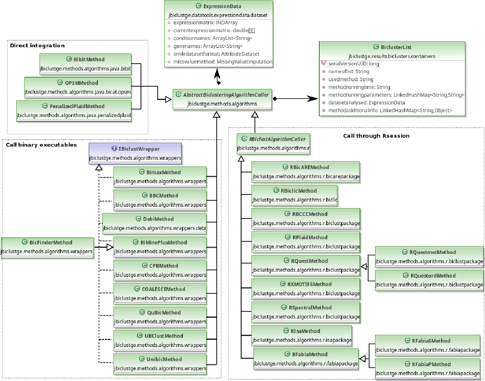

JBiclustGE API
This section presents some examples of how to use JBiclustGE API, for helping the developers to use/extend the functionalities incorporated in this API.
For a detailed information of the classes implemented in this API, see the documentation.
Setup
JBiclustGE depends of several R packages to work properly, thus in the first time that JBiclustGE is executed needs to be always configured concerning to some operational aspects such as: R settings (mainly the folder to install the R packages), maximum allowed p-value, and other optional settings. There is an special class (JBiclustGESetupManager.class) that is responsible to configure, download the required algorithms/R packages, and build the file (jbclustge.properties) that stores the settings of the application.
Important methods of class JBiclustGESetupManager:
-
Check if JbiclustGE Environment its configured:
boolean isconfigured= JBiclustGESetupManager.isJbiclustGEConfigured(); -
Setup the required algorithms in JBiclustGE:
JBiclustGESetupManager.setupJBiclustGEMethodsEnvironment(null) or JBiclustGESetupManager.setupJBiclustGEMethodsEnvironment("/path_chosen_by_user"); -
Initializes the jbiclustge.properties file:
JBiclustGESetupManager.setupJBiclustGEProperties("Path to R library"); -
Reset the previous configuration of JBiclustGE:
JBiclustGESetupManager.resetPreviousConfiguration();
Biclustering Algorithms
All the biclustering algorithms extends to a main abstract class (jbiclustge.methods.algorithms.AbstractBiclusteringAlgorithmCaller), that contains all the methods that are necessary to establish a biclustering method in this API. Figure below shows a generic UML scheme concerning to all the biclustering methods integrated in this API.

How to run a biclustering method:
BicatYeast.csv dataset for example presented bellow, download
public static void main(String[] args) throws FileNotFoundException, IOException, MissingValueImputationException, ParseException {
URL dataUrl=HowToRunBiclusteringMethods.class.getResource("/BicatYeast.csv");
// load expression dataset from file //
ExpressionData expressiondataset=ExpressionData.importFromTXTFormat(dataUrl.getFile()).load();
// Example how to run CPB algorithm //
CPBMethod cpb=new CPBMethod(expressiondataset);
// for instance change number cluster to seed//
cpb.setNumberBiclustersToSeed(200);
// run algorithm //
cpb.run();
// get results obtained by the algorithm //
BiclusterList cpblistresults=cpb.getBiclusterResultList();
//print the results//
cpblistresults.printResults();
///////////////////////// Run Plaid example ////////////////////////////////////////
// methods that were developed in R or belongs to R package starts with R letter //
// initialize plaid method //
RPlaidMethod plaid=new RPlaidMethod();
// add expression dataset //
plaid.setExpressionData(expressiondataset);
// change the parameters that needed to be changed... //
plaid.addClusterType(BCPlaidClusterType.COLUMNS);
plaid.run();
// Use this function after running a algorithm that uses R environment, this allows to shutdown the R session. //
RConnector.closeSession();
BiclusterList plaidresults=plaid.getBiclusterResultList();
}
How to run the biclustering methods in MultiThread
public static void main(String[] args) throws Exception {
URL dataUrl=HowToRunBiclusteringMethods.class.getResource("/BicatYeast.csv");
ExpressionData expressiondataset=ExpressionData.importFromTXTFormat(dataUrl.getFile()).load();
/*
* Configure methods
*/
/*
* initialize list of task with methods that will be run in parallel
*/
ArrayList<BiclusteringTask> methodstasklist=new ArrayList<>();
/*
* add each task one by one
*/
BibitMethod bibit=new BibitMethod(expressiondataset);
methodstasklist.add(new BiclusteringTask(bibit));
RFabiaMethod fabia=new RFabiaMethod(expressiondataset);
methodstasklist.add(new BiclusteringTask(fabia));
/*
* Or use BiclusteringTasksFunctions to create a list of tasks
*/
RIsaMethod isa=new RIsaMethod(expressiondataset);
CPBMethod cpb=new CPBMethod(expressiondataset);
QuBicMethod quibic=new QuBicMethod(expressiondataset);
UnibicMethod unibic=new UnibicMethod(expressiondataset);
methodstasklist.addAll(BiclusteringTasksFunctions.createListOfBiclusteringTasks(isa,cpb,quibic,unibic));
/*
* After creating the list of tasks, use the MultiThreadBiclusteringTaskExecutor to execute these tasks
*/
// the output is the list of biclusters provided by the diferent biclustering algorithms, in the same order of the list of tasks.
List<BiclusterList> results=MultiThreadBiclusteringTaskExecutor.run(4, methodstasklist);
for (int i = 0; i < results.size(); i++) {
results.get(i).printResults();
}
/*
* Close R session connection
*/
RConnector.closeSession();
}
Executing the Gene Set Enrichment analysis engines
ecoli_example.csv dataset for example presented bellow, download
Ontologizer
public static void main(String[] args) throws Exception {
URL dataUrl=OntologizerExample.class.getResource("/ecoli_example.csv");
// load expression dataset from file
ExpressionData expressiondataset=ExpressionData.importFromTXTFormat(dataUrl.getFile()).load();
RIsaMethod isa=new RIsaMethod(expressiondataset);
isa.run();
/*
* initialize ontologizer analyser
*/
OntologizerEnrichmentAnalyser analyser=new OntologizerEnrichmentAnalyser(isa.getBiclusterResultList(), StandardAnnotationFile.Escherichiacoli);
/*
* setup ontologizer parameters
*/
analyser.addCalculationMethod(OntologizerCalculationMethod.TermForTerm);
analyser.addMultipleTestcorrectionMethod(OntologizerMTCMethod.Bonferroni);
analyser.run();
/*
* get results processed by ontologizer
*/
EnrichmentAnalysisResultList results=analyser.getEnrichmentAnalysisResults();
/*
* filter results with a pvalue lower than 0.01 and with adjusted pvalues
*/
results.filterAndProcessResults(0.01, true);
/*
* get only biclusters that have enriched genes
*/
EnrichedBiclusterList enrichedbiclusters= results.getEnrichedBiclusterList();
enrichedbiclusters.printResults();
}
topGO
public static void main(String[] args) throws Exception {
URL dataUrl=HowToRunBiclusteringMethods.class.getResource("/ecoli_example.csv");
// load expression dataset from file
ExpressionData expressiondataset=ExpressionData.importFromTXTFormat(dataUrl.getFile()).load();
RIsaMethod isa=new RIsaMethod(expressiondataset);
isa.run();
TopGOEnrichmentAnalyser analyser=new TopGOEnrichmentAnalyser(isa.getBiclusterResultList(), "org.EcK12.eg.db", true, TopGOMappingType.Symbol);
analyser.run();
EnrichmentAnalysisResultList results=analyser.getEnrichmentAnalysisResults();
/*
* process results with a pvalue lower than 0.05
*/
results.filterAndProcessResults(0.05, false);
System.out.println(results.getPercentageEnrichedBiclusters());
}
Post-processing Analysis
Coherence
public static void main(String[] args) throws FileNotFoundException, IOException, MissingValueImputationException, ParseException {
URL dataUrl=OntologizerExample.class.getResource("/ecoli_example.csv");
// load expression dataset from file
ExpressionData expressiondataset=ExpressionData.importFromTXTFormat(dataUrl.getFile()).load();
// run unibic method over dataset
UnibicMethod unibic=new UnibicMethod(expressiondataset);
unibic.run();
/*
* Perform coherence anlaysis
*/
// check multiplicative variance in all biclusters //
LinkedHashMap<Integer, Double> multivar= CoherenceAnalyser.getMultiplicativeVarianceForBiclusterList(unibic.getBiclusterResultList(), AnalysisTypeDimension.BOTH);
for (Integer bic : multivar.keySet()) {
System.out.println("Multiplicative variance of bicluster "+(bic+1)+" its: "+multivar.get(bic));
}
System.out.println("\n\n");
// check additive variance in all biclusters //
LinkedHashMap<Integer, Double> addvar= CoherenceAnalyser.getAdditiveVarianceForBiclusterList(unibic.getBiclusterResultList(), AnalysisTypeDimension.BOTH);
for (Integer bic : addvar.keySet()) {
System.out.println("Additive variance of bicluster "+(bic+1)+" its: "+addvar.get(bic));
}
System.out.println("\n\n");
// check constant variance in all biclusters //
LinkedHashMap<Integer, Double> constvar= CoherenceAnalyser.getConstantVarianceForBiclusterList(unibic.getBiclusterResultList(), AnalysisTypeDimension.BOTH);
for (Integer bic : constvar.keySet()) {
System.out.println("Constant variance of bicluster "+(bic+1)+" its: "+constvar.get(bic));
}
System.out.println("\n\n");
// check sign variance in all biclusters //
LinkedHashMap<Integer, Double> signvar= CoherenceAnalyser.getSignVarianceForBiclusterList(unibic.getBiclusterResultList(), AnalysisTypeDimension.BOTH);
for (Integer bic : signvar.keySet()) {
System.out.println("Sign variance of bicluster "+(bic+1)+" its: "+signvar.get(bic));
}
}
Coverage
public static void main(String[] args) throws FileNotFoundException, IOException, MissingValueImputationException, ParseException {
URL dataUrl=OntologizerExample.class.getResource("/ecoli_example.csv");
// load expression dataset from file //
ExpressionData expressiondataset=ExpressionData.importFromTXTFormat(dataUrl.getFile()).load();
// run unibic method over dataset //
UnibicMethod unibic=new UnibicMethod(expressiondataset);
unibic.run();
CoverageAnalyser coverage=new CoverageAnalyser(unibic.getBiclusterResultList());
System.out.println("Total genes coverage: "+coverage.getTotalgenescoverage()*100+"%\n");
System.out.println("Total conditions coverage: "+coverage.getTotalconditionscoverage()*100+"%\n");
System.out.println("Total matrix coverage: "+coverage.getTotalmatrixcoverage()*100+"%\n");
}
Overlap
public static void main(String[] args) throws Exception {
// change log level //
LogMessageCenter.getLogger().setLogLevel(MTULogLevel.DEBUG);
URL dataUrl=OntologizerExample.class.getResource("/ecoli_example.csv");
// load expression dataset from file //
ExpressionData expressiondataset=ExpressionData.importFromTXTFormat(dataUrl.getFile()).load();
// run unibic method over dataset //
CPBMethod cpb=new CPBMethod(expressiondataset);
cpb.run();
BiclusterList results=cpb.getBiclusterResultList();
// check overlap between bicluster 1 and 2
System.out.println("overlap between bicluster 1 and 2: "+OverlapAnalyser.getOverlapBeetwenTwoBiclusters(results.get(0), results.get(1)));
// remove biclusters that have an overlap higher than a threshold
BiclusterList filteredlist=OverlapAnalyser.filterBiclusterListWithOverlapThreshold(results, 0.2, results.size());
filteredlist.printResults();
System.out.println("Average Overlap: "+OverlapAnalyser.AverageOverlap(results));
}